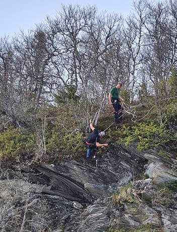
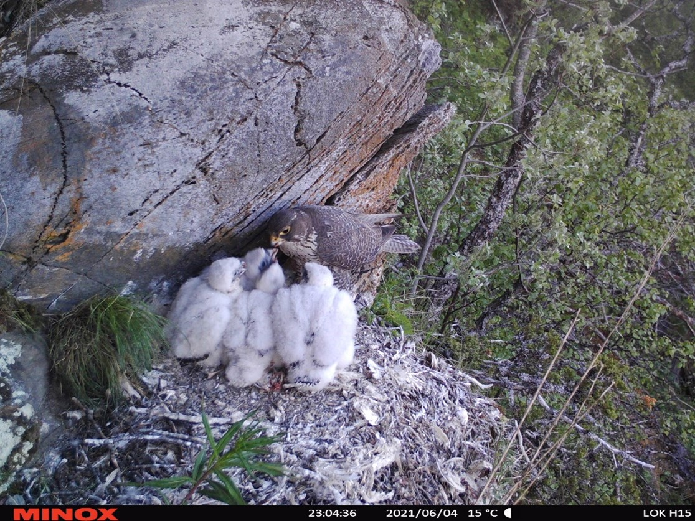
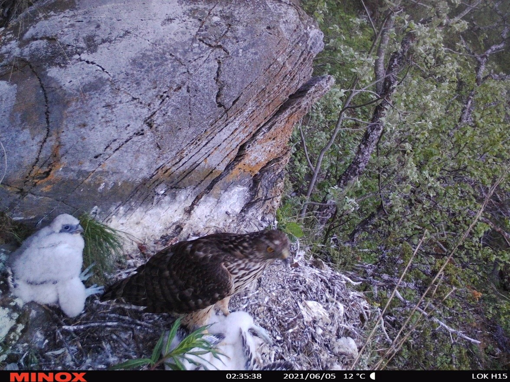
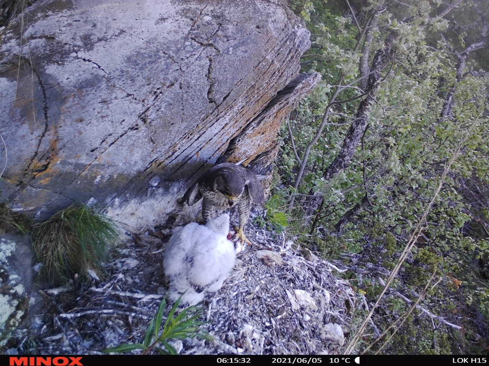

![]()
New intraguild predation event revealed by nest site monitoring by game camera
 Figure 1: Installation of wildlife cameras on gyrfalcon nests
In a paper recently published in the Journal of Raptor Research, we report an instance of a juvenile northern goshawk preying upon a brood of gyrfalcon. Although there are only a handful of recorded instances of predation on gyrfalcon nestlings, there have been observations in Sweden and Russia involving pine marten and peregrine falcon, respectively. The common raven and golden eagle are suggested to be potential predators on gyrfalcon nestlings, however, there is no direct evidence to support this.
From 2018 to 2022, we monitored 11 gyrfalcon nests in central Norway using motion-trigged wildlife cameras. (Fig. 1). On the night of June 5th, 2021, our cameras captured footage of a northern goshawk attacking and killing three gyrfalcon nestlings. Three hours before the attack happened, the female gyrfalcon was recorded at the nest feeding her four nestlings (Fig. 2).
According to the camera footages the goshawk attacked and killed the nestlings between 02:14 and 02:35 (Fig. 2). During this time frame, none of the adult gyrfalcons were present in the images. The absence of the gyrfalcon parents during the depredation of the brood suggests that they may not actively defend their nests against predators, instead relying on low risk of predation. At 06:12, i.e. four hours after the attack happened, the female gyrfalcon returned to the nest to feed the only surviving nestling (Fig. 2).
By comparing the size of the goshawk with the female gyrfalcon, we determined that the predator was a subadult female. Although goshawks typically prey on various birds and mammals, intraguild predation between goshawks and gyrfalcons is probably uncommon since they normally use different habitats. However, the proximity of gyrfalcon nests to goshawk habitats in central Norway increases the likelihood of such interactions. Predation by goshawks introduces further challenges to the survival of gyrfalcons, exacerbating threats like habitat modification and low survival rates among juveniles.



Figure 2: Upper left: A female gyrfalcon feeding her four nestlings in the evening of 4th June, 2021. This picture was taken around three hours before the northern goshawk attacked the nestlings. Upper right: A subadult female northern goshawk attacks and kills three gyrfalcon nestlings in a nest in Lierne on 5th June 2021. Lower left: The female gyrfalcon returned at the nest 4 hours after the attack occurred, to feed her only surviving nestling. This nestling fledged on 29 June
In conclusion, our study provides a rare documentation of goshawk predation on gyrfalcon nestlings, highlighting the significance of understanding predator-prey dynamics in changing ecosystems (Moen et al. 2023).
The County Governor of Trøndelag provided financial support for the monitoring of gyrfalcon nests. Permits to install wildlife cameras in protected areas were issued by the county administration in Trøndelag.
Full reference: Moen, B.C., Kroglund, R.T., Østnes, J.E., Nilsen, E.B. & Nygård, T. (2023) Wildlife Camera Monitoring Revealed the Northern Goshawk as a Predator on Gyrfalcon Nestlings. Journal of Raptor Research, 57, 671-675. (doi: https://doi.org/10.3356/JRR-23-00007)